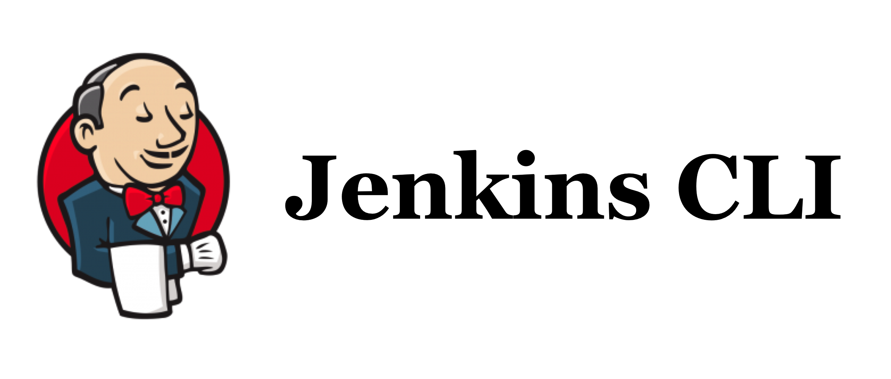
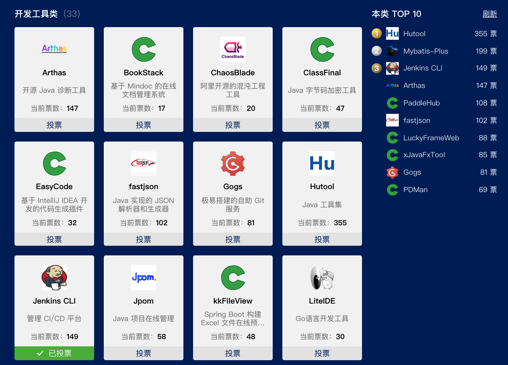

Jenkins CLI，助你轻松管理 Jenkins

Jenkins CLI，简称 jcli，一个使用 Golang 开发的开源的 Jenkins 命令行工具。 它可以帮忙你轻松地管理 Jenkins。 无论你是 Jenkins 插件开发者，还是 Jenkins 管理员或者只是一个普通的 Jenkins 用户，它都是为你而生！
Jenkins CLI 功能简介
从2019年6月份第一个 git commit 算起，经过不断迭代，截止目前 Jenkins CLI 已经对外发布了18个版本，下载量超过2000，功能也日益增多。 目前主要功能列表如下所示： * 支持多 Jenkins 实例管理 * 插件管理（查看列表、搜索、安装、上传） * 任务管理（搜索、构建触发、日志查看） * 在浏览器中打开你的 Jenkins * 重启你的 Jenkins * 支持通过代理连接
此外，优秀的开源项目应该有着高代码质量。Jenkins CLI 始终坚持内建质量的原则，在开发过程中持续编写单元测试代码，并使用 TravisCI + SonarCloud 对代码质量持续分析，从而保证代码质量。 目前测试覆盖率为81.8%，下一个目标是将测试覆盖率提升到90%。 Go Report Card 给 Jenkins CLI 的代码质量评分为 A+。
如何安装 Jenkins CLI？
Jenkins CLI 目前支持的操作系统有：MacOS、Linux 以及 Windows。
在 Mac 上安装
在 Mac 上可以通过 brew 来安装 jcli：
brew tap jenkins-zh/jcli
brew install jcli
在 Linux 上安装
要在 Linux 操作系统上安装 jcli 的话，非常简单。 只需要执行下面的命令即可：
curl -L https://github.com/jenkins-zh/jenkins-cli/releases/latest/download/jcli-linux-amd64.tar.gz|tar xzv
sudo mv jcli /usr/local/bin/
在 Windows 上安装
你只要点击这里就可以下载到最新版本的压缩包。然后，把解压后的文件 jcli 拷贝到你的系统目录下即可。
其他包管理器
还可以使用一些其他的包管理器安装 jcli：
* GoFish 的用户可以使用命令 gofish install jcli 来安装
* Scoop 的用户可以使用命令 scoop install jcli 来安装
GoFish 同时支持 Linux 和 Windows，Scoop 支持 Windows。
使用入门
安装 jcli 后，你需要提供一份配置文件。请执行命令 jcli config generate，该命令会帮助你编辑配置文件 ~/.jenkins-cli.yaml，你需要根据实际的 Jenkins 配置情况做相应的修改。
配置文件准备好后，便可以进行一些实际操作了。 下面举几个插件管理和任务管理的例子作为说明。
插件管理
使用 jcli 搜索插件：
jcli plugin search zh-cn
使用 jcli 下载插件，如果该插件有相关依赖插件的话，会同时下载依赖插件：
jcli plugin downlaod localization-zh-cn
使用 jcli 安装插件：
jcli plugin install localization-zh-cn
任务管理
使用 jcli 触发构建：
jcli job build pipeline-01
使用 jcli 查看构建日志，如果任务正在运行，它会实时监听日志输出，否则输出最近一次构建日志：
jcli job log pipeline-01
更多命令请查看帮助
限于篇幅原因，更多使用说明不做一一介绍，请查看帮助命令：
jcli --help
jcli <command> --help
jcli <command> <subcommand> --help
也可以查看官方文档： - https://github.com/jenkins-zh/jenkins-cli/blob/master/doc/README.md - https://jenkins-zh.github.io/jcli-docs/
如果你有意愿使用 Jenkins CLI，那么赶快动手来体验吧！
新功能路线图
Jenkins CLI 仍旧在不断发展中。 挑选了几个计划中的新功能，列表如下： - 支持自我升级 - 支持列出所有 agent 节点 - 支持更新所有插件 - 支持展示插件趋势
如果你有希望开发的新功能，请提交 issue 到 GitHub 仓库。
欢迎反馈与贡献
如果你在使用过程中遇到问题，欢迎在 GitHub 仓库提交 issue 来反馈； 同时，我们也非常欢迎贡献者对 Jenkins CLI 贡献自己的一份力量。 目前除了国内的主要贡献者： - LinuxSuRen - yJunS
还有来自其他国家或地区的贡献者为 Jenkins CLI 做出过贡献，他们是： - zirmax - scottydocs - sbcd90 - oleg-nenashev
无论是小到一个错别字的修改，大到一个新的功能的开发，或者是在使用过程中提交 issue 反馈，它们对 Jenkins CLI 发展而言都有着重要的意义。
Jenkins CLI 期待你的投票
2019 年的中国开源界，开源项目的数量也在激增。
作为中国开源界的一份子，此时此刻，Jenkins CLI 正在参加由 OSCHINA（开源中国）主办的2019年度最受欢迎中国开源软件评选活动。

恳请占用你的一点宝贵时间，麻烦动动手指为 Jenkins CLI 投上支持的一票，不胜感激！
投票方式：长按图片，识别图中二维码，打开投票活动页面，找到开发工具类-->Jenkins CLI，点击投票，再次感谢支持 Jenkins CLI ！